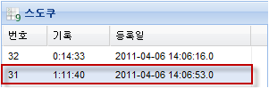
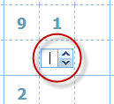
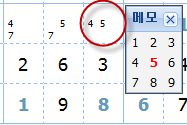
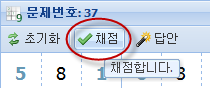
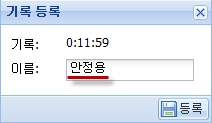
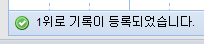
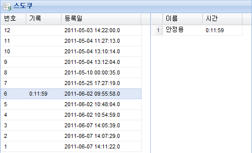

문제를 더블클릭하면 게임이 시작됩니다.

빈 공간을 클릭하면 숫자를 입력할 수 있습니다.
"0"은 입력하지 않은 것이 됩니다.

빈 공간에서 오른쪽 버튼 클릭을 하면 메모할 수 있습니다.
이 창은 마우스가 벗어나면 2초후 사라집니다.

문제를 전부 푼 후 채첨 버튼을 클릭합니다.

답을 맞추면 기록을 등록할 수 있는 창이 뜹니다.

기록이 몇위로 등록되었는지 상태바에 표시됩니다.

목록에서 보면 순위가 표시됩니다.
